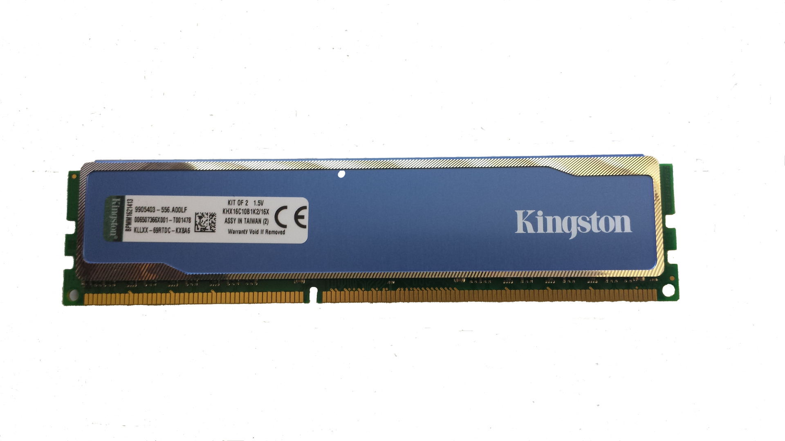

1. Tarjeta Madre
La plataforma principal que interconecta todos los componentes del sistema permitiendo la comunicación de datos eficiente.
Explorar TemaSeleccionar adecuadamente el hardware para el desarrollo de software es fundamental para garantizar un rendimiento óptimo durante la ejecución de entornos de desarrollo (IDE), máquinas virtuales, contenedores y compiladores. Esta guía educativa brinda los fundamentos conceptuales de cada componente clave.

No se encontraron temas que coincidan con tu búsqueda.
La plataforma principal que interconecta todos los componentes del sistema permitiendo la comunicación de datos eficiente.
Explorar Tema
El núcleo de procesamiento encargado de ejecutar instrucciones de software, algoritmos y procesos de compilación.
Explorar Tema
Memoria de alta velocidad crucial para mantener abiertas múltiples aplicaciones, máquinas virtuales y navegadores.
Explorar Tema
Unidades de estado sólido de alta velocidad para la lectura y escritura veloz de archivos de código y bases de datos.
Explorar Tema
Suministro eléctrico eficiente y certificado que protege y alimenta de forma limpia todos los circuitos del sistema.
Explorar Tema
Sistemas de disipación de calor por aire o líquido para preservar la vida útil y mantener el rendimiento sostenido.
Explorar Tema
Procesamiento gráfico especializado necesario para aceleración por hardware, renderizado y desarrollo en IA o videojuegos.
Explorar TemaSelecciona los componentes sugeridos para simular el costo aproximado, consumo energético y validación para el programa de software:
Costo Estimado Aproximado: $ 0 COP
Consumo Eléctrico Estimado: 0 W